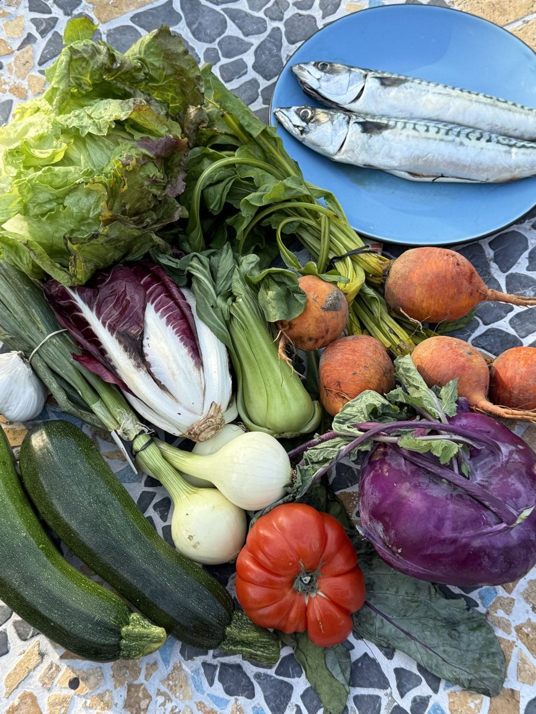
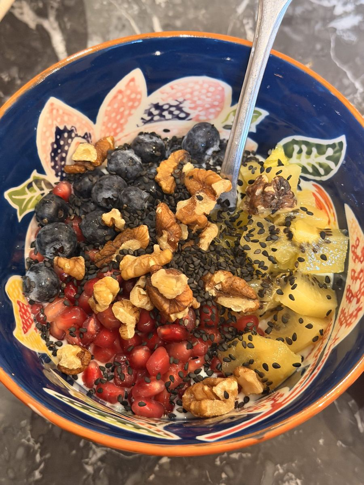
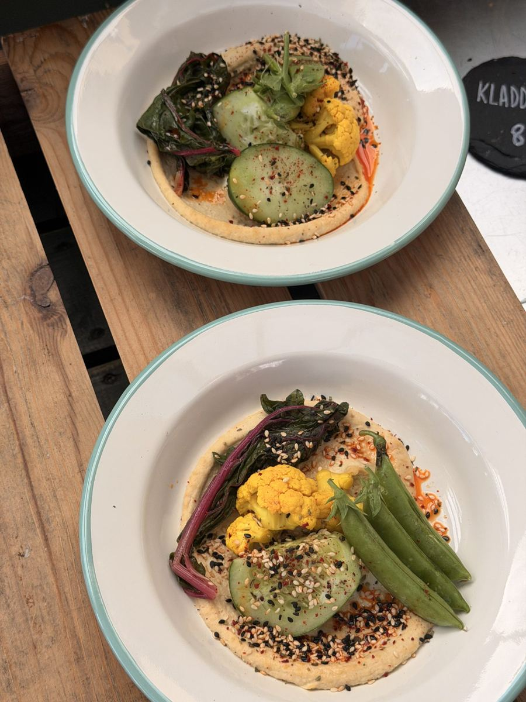
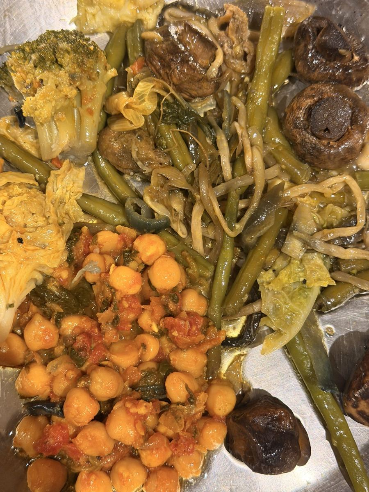
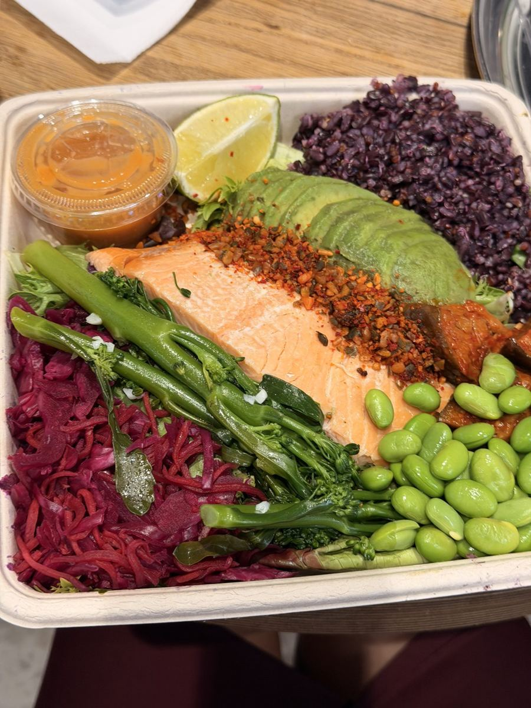

Free 30-day challenge · Starts Monday 16 November
30-30-30 Fibre Challenge
Thirty days to feed your gut properly. A simple, add-don’t-remove plan from Vishen Lakhiani and microbiome scientist Nora Cavani, with recipes, trackers and one small thing to do every day.

Monday 16 November to Tuesday 15 December. Measure on day one, measure again on day thirty-one.
The daily amount health guidelines recommend. Most adults eat about half of it.
Thirty different plants across seven days. Fruit, veg, grains, beans, nuts, seeds, herbs and spices all count.
What you get, free
Everything you need for the 30 days.
No new diet. Keep the meals you love and add to them, one small step a day.
The 30-day guide
An 18-page PDF with a daily action, weekly trackers, a fibre cheat sheet and Nora’s breakfast bowl. Yours the moment you sign up.
Three live calls with Nora
Nora goes live roughly every ten days to teach, answer your questions and share what she sees in thousands of gut tests.
The challenge community
A daily prompt from 16 November to 16 December. Share your bowls, swap recipes and see what everyone else is eating.
Track it with Vibrantly
Photograph what you eat and Vibrantly tracks your fibre and suggests what to add. Free for 14 days.
Why this challenge exists
Seven weeks. Seven centimetres. One missing nutrient.
A note from Vishen
Last year, travelling through Malaysia, Korea and the US, my waist grew 7 cm in seven weeks. Back home I started photographing every meal and asking AI to analyse it. It told me something I had never thought about: I was very low on fibre.
So I made one change: a bowl of Greek yoghurt every morning with berries, chia, psyllium, seeds and cinnamon. My waist went from 87 cm back to around 80. I changed other things too, but fibre was the biggest.
A note from Nora
At 27 I developed eczema from my neck to my feet. I had trained in molecular biology, so I went looking for the source of the inflammation. Again and again, the trail led to the gut, and to fibre.
You don’t need to cut anything for this. Keep the meals you love and add to them. Start with breakfast, go slowly, and let your gut adjust.
“Fibre is the most underrated biohack ever.”
How the challenge works
Thirty days, one small step a day.
The targets build week by week, so your gut has time to adjust.

Start with breakfast
One fibre-rich bowl gets you halfway to 30 g before the day starts.
15–20 g a day · 15 plants
Add, don’t remove
Keep every meal you love and add a source of fibre to it. Beans and lentils are the fastest route.
20–25 g a day · 20 plants
Grow the forest
The variety week. New colours, new grains, new beans and a fuller spice rack.
25–30 g a day · 25 plants
Make it stick
Batch-cook, set up your kitchen and bring the people you live with along.
30 g+ a day · 30 plantsStarts Monday 16 November
Join free and get the guide today.
Sign up and you’ll get the 30-day guide straight away, the dates for Nora’s three live calls, and your invite to the challenge community.